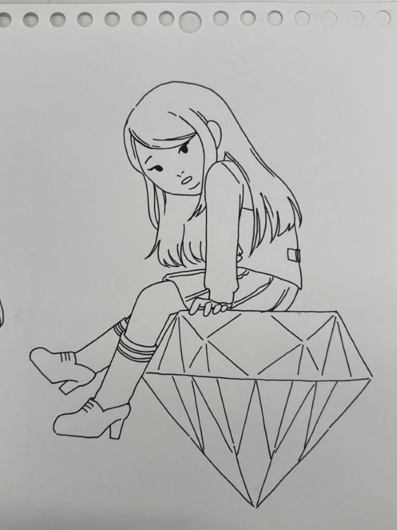
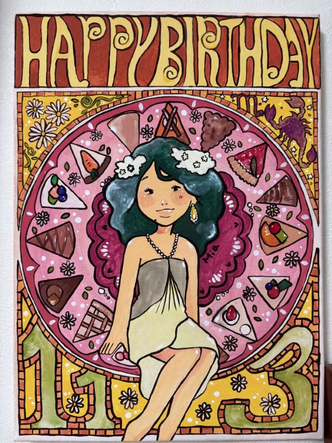
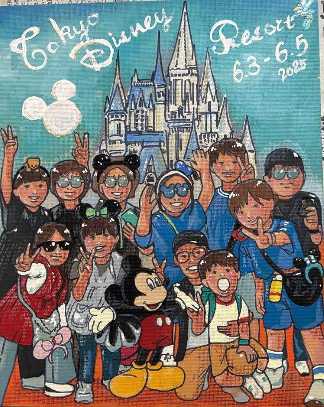
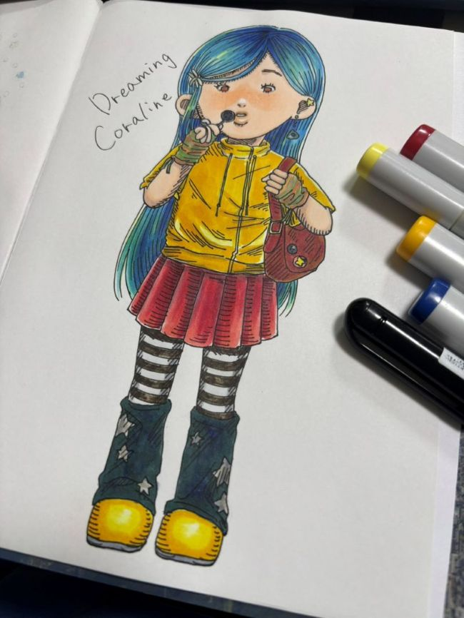
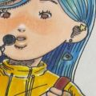
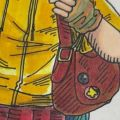

今週のイラスト一覧
目次
4月24日のイラスト

2026.04.24
4月の誕生石「ダイヤモンド」をテーマに描きました。
ダイヤモンドに座る女の子を描いています。
5月1日のイラスト

2026.05.01
ミュシャの作品を参考にしながら、装飾的な雰囲気を意識して描きました。
曾祖母への誕生日プレゼントとして制作したものです。
5月8日のイラスト

2026.05.08
家族でディズニーに行った時の写真を、ゆるい雰囲気でイラスト化しました。
コララインのイラスト：こだわりポイント紹介

完成イラストの全体図です。

髪の青は5色を重ねて、光の当たり方を細かく調整しています。
手に持っているのは“マイク”ではなく、原作を意識した「ボタンのカギ」。
小物の設定までこだわっています。
顔まわりの影は濃くしすぎないようにして、柔らかい雰囲気を残しました。

黄色の服は影を強めに入れて、立体感を出しています。